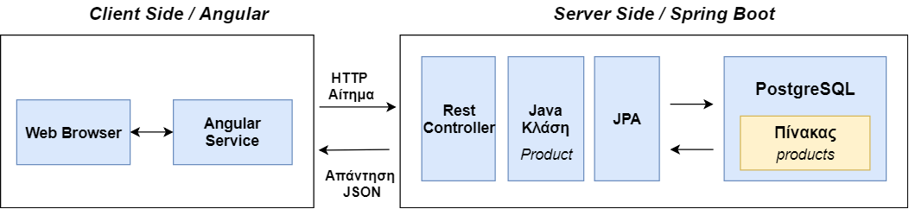

Αρχιτεκτονική Client-Server
Η αρχιτεκτονική client-server χωρίζει την εφαρμογή σε δύο κομμάτια, τον client και τον server. Μια τέτοια εφαρμογή δημιουργείται σε ένα δίκτυο υπολογιστών, το οποίο συνδέει τον client με τον server. O server παρέχει την κεντρική λειτουργικότητα : πολλοί clients μπορούν να συνδεθούν ταυτόχρονα με τον server και να του ζητήσουν, να πραγματοποιήσει μια λειτουργία. O server παίρνει τα αιτήματα του client, πραγματοποιεί τη λειτουργία και επιστρέφει τα αποτελέσματα στον client.
Single-page application
To single-page application είναι μια web εφαρμογή, η οποία αλληλεπιδρά με το χρήστη, ενημερώνοντας την τρέχουσα σελίδα, αντί να κατεβάζει ολόκληρες, καινούριες σελίδες από τον server. Η προσέγγιση αυτή αποφεύγει την διακοπή του user experience με τα διαδοχικά φορτώματα των σελίδων, κάνοντας την εφαρμογή να συμπεριφέρεται περισσότερο σαν desktop application. Όλος ο απαραίτητος κώδικας (HTML, JavaScript και CSS) ανακτάται με μια μοναδική φόρτωση της σελίδας.
Η Spring Boot εφαρμογή, η οποία τρέχει στον απομακρυσμένο server στο Heroku αποτελεί το κομμάτι του server. Δημιουργούμε ένα REST API, το οποίο παρέχει τα δεδόμενα της βάσης δεδομένων στον client. Η Angular εφαρμογή, η οποία τρέχει στον browser του χρήστη αποτελεί το κομμάτι του client. Ο κώδικας φορτώνεται στην αρχή και ύστερα ο client πραγματοποιεί HTTP αιτήματα στον server, καταναλώνοντας το API, για να πάρει τα δεδομένα και να ανανεώσει την σελίδα.
